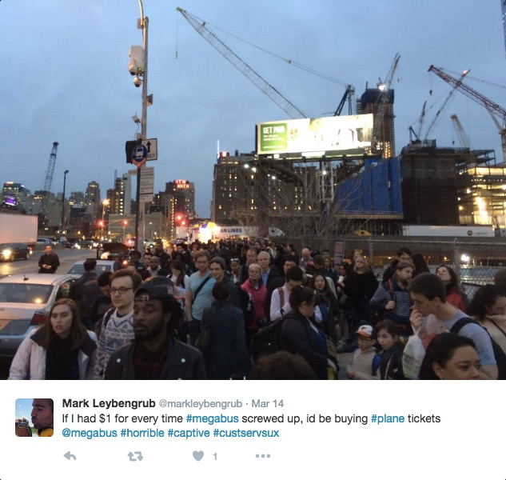

riding the mega
Social media users leave digital traces that can be leveraged to guide consumer purchasing decisions. Twitter users, in particular, provide temporal data that can be analyzed to develop a more precise understanding of users’ perspectives or sentiments about a service, company, or product. This information, in turn, can be shared with the public to allow customers to make decisions based on crowd-sourced knowledge. It may also even help the service provider understand how they can improve their services.
Imagine it is Friday in July and you are finishing up a long week at the office. The clock reads 4:00pm and you quickly race to pack up your work station. You need to get downtown to catch the 5pm MegaBus from NYC to Washington, DC. You are ready to start the weekend and have plans at 10pm in downtown DC. You navigate the NYC subway and break a sweat walking quickly down 34th Street, hoping that you are early enough to score an aisle seat. As you approach the bus stop you come into view of your worst nightmare: a line with hundreds of angry Megabus passengers waiting with no bus in sight. As you walk towards the end of the line another passenger mentions that the 3:30pm bus hasn't arrived yet. A Megabus employee tells you he has no idea when the 5pm bus will depart ("Who knows..."). It is 90 degrees, you are sweating profusely, and you will surely miss your evening plans. You feel helpless. A wronged consumer with no recourse. Then you remember a social media site called Twitter...
Based on our personal experience and the experience of others, we aim to analyze recent tweets to understand the degree of positive and negative sentiment among users of the low-cost bus company, Megabus, over time. While Megabus is an inexpensive and convenient transportation option with many buses departing major cities each day, we hypothesized that some days or times of year may be more reliable, i.e., buses have fewer breakdowns and delays, than others. Using social media, data visualization and statistics we provide an informative and entertaining sentiment analysis of Megabus experiences from January 1, 2016 to April 1, 2016. Our work offers future bus riders information on the type of experience they can expect when riding the Megabus.
Sentiment analysis performed by our very own TA, David Robinson @dgrtwo, provided initial guiding inspiration for this this work.
We were also inspired by sentiment analysis of Twitter data related to current events. Some examples of other analyses that we explored includes The Best and Worst Public Transit Systems, According to Twitter (Wired Magazine) and "Tonar", An Incivility Index for Election 2016 by Andrew Heyward.